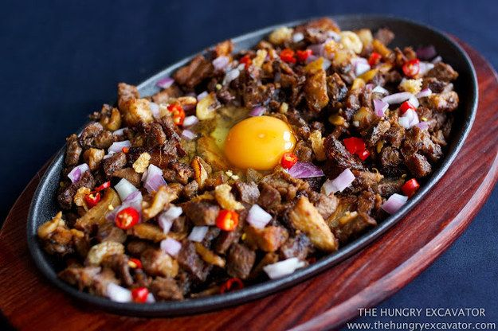

Sisig Recipes

What is sisig?
Sisig refers to a finely chopped pork dish of Filipino origin. This recipe uses pork belly and maskara (pig face). It is popular in the Philippines and is now gaining popularity worldwide. It can be consumed as an appetizer and a main dish.
1 ½ lbs. Pork belly
3 tablespoons Knorr Liquid Seasoning
1 lb. pig face maskara
4 ounces chicken liver
2 pieces onion
½ cup chicharon crumbled
▢ 3 tablespoons Ladys Choice Mayonnaise
2 teaspoons onion powder
¼ teaspoon ground black pepper
▢ ½ teaspoon chili flakes optional
▢ 1 tablespoon butter
▢ 3 tablespoons cooking oil
▢ 2 quarts water
Directions
Start to cook sisig by boiling the meat. I boiled the pork belly and maskara for 1 hour in medium heat. The meat needs to be tenderized so that it will be easier to chop later on.
I also grill the meat after boiling. This will give it a good texture. There are no marinades or rubs needed here. Simply put the boiled pork belly and maskara on a hot grill, and then grill each side for 5 minutes or until is starts to darken.
It is chopping time at this point. Simply chop the belly and pig face into small pieces. I use a knife known as a cleaver to assist me in this step. It weighs heavy enough and has a sharp cutting edge that helps me chop easily. The size of the chopped pork will depend on your preference. You can go a bit bigger or chop it as fine as it can get depending on your preference. Set the meat aside after this step. It is time to cook it on the stovetop.
I started by sautéing the onions. Chicken livers were added afterwards. These steps can be interchanged just so you know. Let me explain. Chicken liver is an essential ingredient for my sisig recipes. It provides a good amount of flavor to the dish. These can be chopped or sliced into smaller pieces before cooking. I am just not used in doing that, but you can. What I do is to cook it thoroughly and mash it right on the pan while cooking. These livers are easier to mash when thoroughly cooked, unlike pork or beef liver, which tend to get tougher. You can fry the chicken liver first until cooked all throughout. This will usually take 5 minutes. The other option is to do it as this recipe suggest. An easier option for beginners would be to chop the livers into small pieces before cooking. This makes mashing it easier.
Add the chopped pork into the mix. These do not need to cook long. Give it a nice stir for around 3 minutes just to ensure that all ingredients in the pan are distributed evenly. Add seasonings and spices afterwards. You have the option to add chili flakes at this point. Note that I am using Knorr Liquid Seasoning to provide additional flavor to the dish. It can provide a good amount of flavor compared to regular soy sauce.
The final texture of sisig is somewhat mushy. Pig brains are added into the mixture in traditional recipes to obtain this. Good news! There are alternative ingredients. Mayonnaise is one. This is what I used in this recipe.